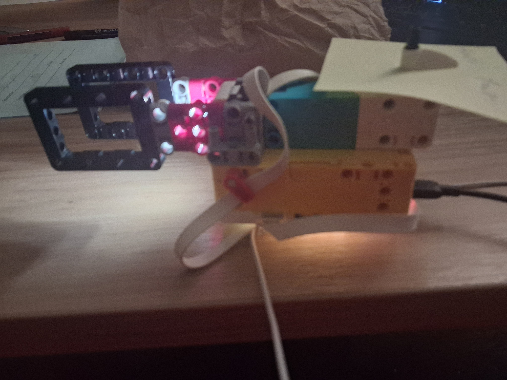
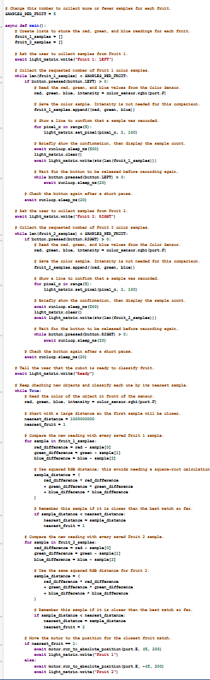

Project Portfolio

Project 12: Fruit Scanner
This project uses a LEGO SPIKE color sensor to scan different fruits by reading their color and comparing the values to a saved reference sample. The robot records a fruit's red, green, and blue values, then uses those numbers to decide whether the item matches the expected fruit type.
The program is designed to take repeated sensor readings, compare them to a stored threshold, and then classify the fruit based on how closely the values match. This makes the scanner a simple example of using sensor data and decision-making in a robotics task.
Fruit comparison logic
